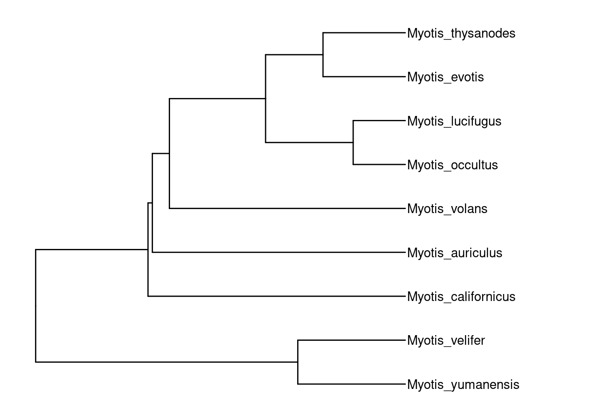
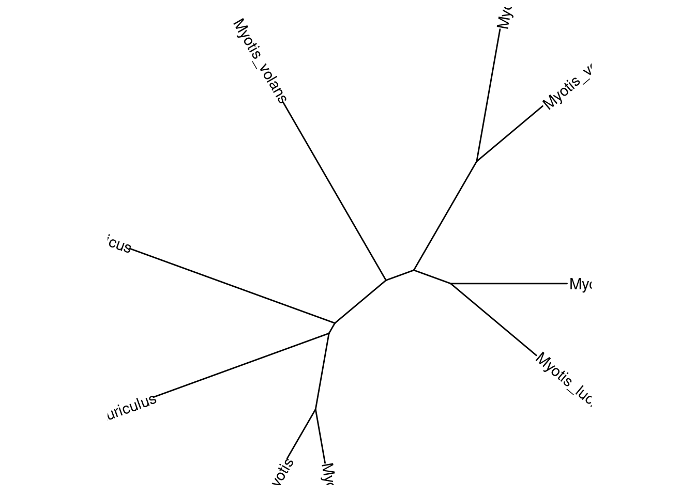
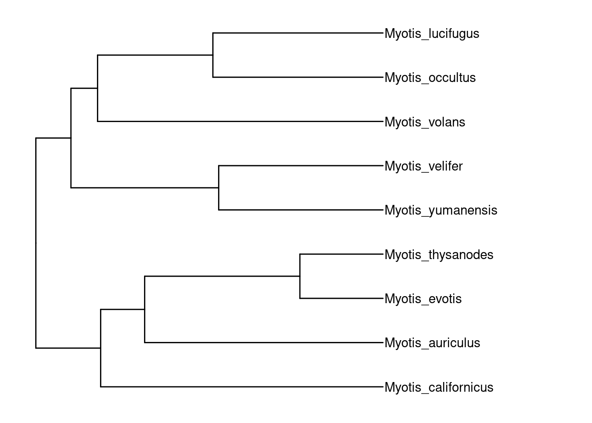
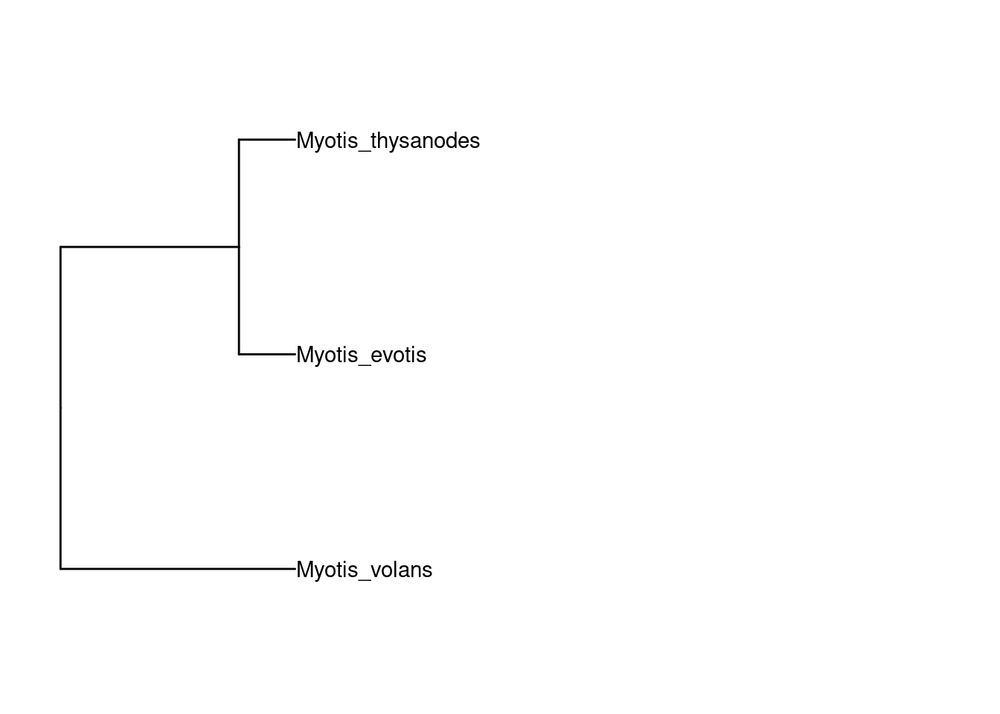
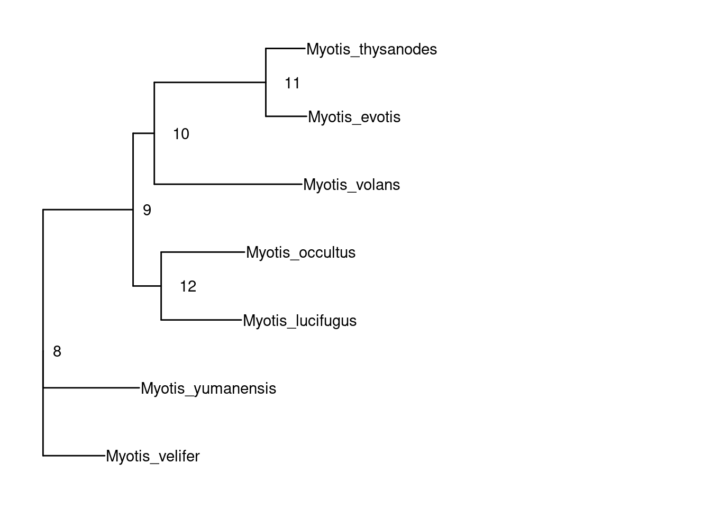
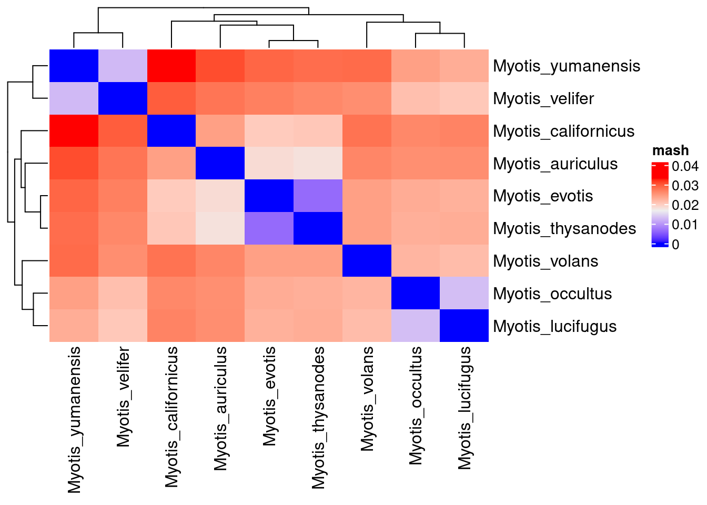
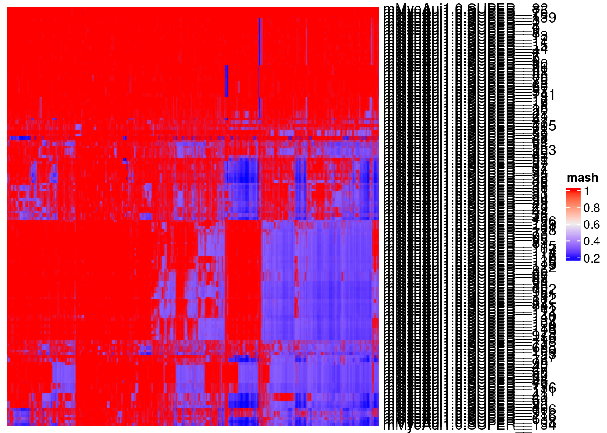

mash-dist
Juan M Vazquez (docmanny)
2022-12-15
Last updated: 2023-01-31
Checks: 7 0
Knit directory: R_workflowr/analysis/
This reproducible R Markdown analysis was created with workflowr (version 1.7.0). The Checks tab describes the reproducibility checks that were applied when the results were created. The Past versions tab lists the development history.
Great! Since the R Markdown file has been committed to the Git repository, you know the exact version of the code that produced these results.
Great job! The global environment was empty. Objects defined in the global environment can affect the analysis in your R Markdown file in unknown ways. For reproduciblity it’s best to always run the code in an empty environment.
The command set.seed(20221115) was run prior to running
the code in the R Markdown file. Setting a seed ensures that any results
that rely on randomness, e.g. subsampling or permutations, are
reproducible.
Great job! Recording the operating system, R version, and package versions is critical for reproducibility.
Nice! There were no cached chunks for this analysis, so you can be confident that you successfully produced the results during this run.
Great job! Using relative paths to the files within your workflowr project makes it easier to run your code on other machines.
Great! You are using Git for version control. Tracking code development and connecting the code version to the results is critical for reproducibility.
The results in this page were generated with repository version ab25732. See the Past versions tab to see a history of the changes made to the R Markdown and HTML files.
Note that you need to be careful to ensure that all relevant files for
the analysis have been committed to Git prior to generating the results
(you can use wflow_publish or
wflow_git_commit). workflowr only checks the R Markdown
file, but you know if there are other scripts or data files that it
depends on. Below is the status of the Git repository when the results
were generated:
Ignored files:
Ignored: R_workflowr/.RData
Ignored: R_workflowr/.Rhistory
Ignored: R_workflowr/.Rprofile
Ignored: R_workflowr/.Rproj.user/
Ignored: R_workflowr/_workflowr.yml
Ignored: analyses/annotation/output/
Ignored: analyses/cactus/data/
Ignored: analyses/pangenome/output/
Ignored: data/USGS_SpeciesRanges/
Ignored: data/genomes/
Ignored: data/gff/
Ignored: data/tree/
Untracked files:
Untracked: R_workflowr/.gitattributes
Untracked: R_workflowr/.gitignore
Untracked: R_workflowr/R_workflowr.Rproj
Untracked: R_workflowr/analysis/
Untracked: R_workflowr/ng_curves.html
Untracked: R_workflowr/renv.lock
Untracked: R_workflowr/renv/
Untracked: analyses/mMyoLuc1/
Untracked: analyses/makeHub/
Untracked: analyses/tmp-mMyoLuc1/
Note that any generated files, e.g. HTML, png, CSS, etc., are not included in this status report because it is ok for generated content to have uncommitted changes.
There are no past versions. Publish this analysis with
wflow_publish() to start tracking its development.
Introduction
library(ape)
library(phangorn)
library(tidyverse)Warning in system("timedatectl", intern = TRUE): running command 'timedatectl'
had status 1── Attaching packages ─────────────────────────────────────── tidyverse 1.3.2 ──
✔ ggplot2 3.4.0 ✔ purrr 0.3.5
✔ tibble 3.1.8 ✔ dplyr 1.0.10
✔ tidyr 1.2.1 ✔ stringr 1.4.1
✔ readr 2.1.3 ✔ forcats 0.5.2
── Conflicts ────────────────────────────────────────── tidyverse_conflicts() ──
✖ dplyr::filter() masks stats::filter()
✖ dplyr::lag() masks stats::lag()library(ggtree)ggtree v3.7.1 For help: https://yulab-smu.top/treedata-book/
If you use the ggtree package suite in published research, please cite
the appropriate paper(s):
Guangchuang Yu, David Smith, Huachen Zhu, Yi Guan, Tommy Tsan-Yuk Lam.
ggtree: an R package for visualization and annotation of phylogenetic
trees with their covariates and other associated data. Methods in
Ecology and Evolution. 2017, 8(1):28-36. doi:10.1111/2041-210X.12628
S Xu, Z Dai, P Guo, X Fu, S Liu, L Zhou, W Tang, T Feng, M Chen, L
Zhan, T Wu, E Hu, Y Jiang, X Bo, G Yu. ggtreeExtra: Compact
visualization of richly annotated phylogenetic data. Molecular Biology
and Evolution. 2021, 38(9):4039-4042. doi: 10.1093/molbev/msab166
G Yu. Data Integration, Manipulation and Visualization of Phylogenetic
Trees (1st ed.). Chapman and Hall/CRC. 2022. ISBN: 9781032233574
Attaching package: 'ggtree'
The following object is masked from 'package:tidyr':
expand
The following object is masked from 'package:ape':
rotatelibrary(ggnewscale)
library(ComplexHeatmap)Loading required package: grid
========================================
ComplexHeatmap version 2.14.0
Bioconductor page: http://bioconductor.org/packages/ComplexHeatmap/
Github page: https://github.com/jokergoo/ComplexHeatmap
Documentation: http://jokergoo.github.io/ComplexHeatmap-reference
If you use it in published research, please cite either one:
- Gu, Z. Complex Heatmap Visualization. iMeta 2022.
- Gu, Z. Complex heatmaps reveal patterns and correlations in multidimensional
genomic data. Bioinformatics 2016.
The new InteractiveComplexHeatmap package can directly export static
complex heatmaps into an interactive Shiny app with zero effort. Have a try!
This message can be suppressed by:
suppressPackageStartupMessages(library(ComplexHeatmap))
========================================species = c(
"Myotis_occultus",
"Myotis_lucifugus",
"Myotis_evotis",
"Myotis_thysanodes",
"Myotis_auriculus",
"Myotis_californicus",
"Myotis_yumanensis",
"Myotis_velifer",
"Myotis_volans"
)
species_genome = c(
"Myotis_auriculus" = "mMyoAui1.cleaned",
"Myotis_californicus" = "mMyoCai1.cleaned",
"Myotis_occultus" = "mMyoOcc1.cleaned",
"Myotis_lucifugus" = "mMyoLuc1.cleaned",
"Myotis_yumanensis" = "mMyoYum1.cleaned",
"Myotis_volans" = "mMyoVol1.cleaned",
"Myotis_velifer" = "mMyoVel1.cleaned",
"Myotis_evotis" = "mMyoEvo1.cleaned",
"Myotis_thysanodes" = "mMyoThy1.cleaned"
)
genome_species = c(
"mMyoAui1.cleaned" = "Myotis_auriculus",
"mMyoCai1.cleaned" = "Myotis_californicus",
"mMyoOcc1.cleaned" = "Myotis_occultus",
"mMyoLuc1.cleaned" = "Myotis_lucifugus",
"mMyoYum1.cleaned" = "Myotis_yumanensis",
"mMyoVol1.cleaned" = "Myotis_volans",
"mMyoVel1.cleaned" = "Myotis_velifer",
"mMyoEvo1.cleaned" = "Myotis_evotis",
"mMyoThy1.cleaned" = "Myotis_thysanodes"
)tree.timetree <- read.tree('../../data/tree/species_timetree.nwk') %>%
keep.tip(species)
p.tree.timetree <- ape::rotateConstr(tree.timetree, species) %>%
ggtree()
p.tree.timetree +
theme_tree() +
xlim_tree(c(NA,20)) +
geom_tiplab() +
theme_tree()
dist_mat <- read_tsv(file = '../../data/mash_matrix_full.tsv') %>%
rename(all_of(species_genome)) %>%
mutate(`...1`= genome_species[`...1`]) %>%
column_to_rownames('...1') %>%
as.matrix() %>%
as.dist()New names:
Rows: 9 Columns: 10
── Column specification
──────────────────────────────────────────────────────── Delimiter: "\t" chr
(1): ...1 dbl (9): mMyoAui1.cleaned, mMyoCai1.cleaned, mMyoEvo1.cleaned,
mMyoLuc1.clea...
ℹ Use `spec()` to retrieve the full column specification for this data. ℹ
Specify the column types or set `show_col_types = FALSE` to quiet this message.
• `` -> `...1`tree.nj <- ape::nj(dist_mat)
ggtree(tree.nj, layout = "ape") +
geom_tiplab()
tree.upgma <- phangorn::upgma(dist_mat)
p.tree.upgma <- ape::rotateConstr(tree.upgma, species) %>%
ggtree()
p.tree.upgma +
geom_tiplab() +
theme_tree() +
xlim_tree(c(NA, 0.02))
cotree.upgma <- ape::rotateConstr(tree.upgma, species)
cotree.timetree <- ape::rotateConstr(tree.timetree, species)
assoc.mat <- cbind(cotree.timetree$tip.label,cotree.timetree$tip.label)
ape::cophyloplot(x = cotree.upgma, y= cotree.timetree, assoc = assoc.mat)
p.tree.timetree.cladeogram <- tree.timetree %>%
# ape::rotateConstr(species) %>%
ggtree(branch.length = 'none') %>%
rotate(tree_view = ., node = 15) %>%
rotate(tree_view = ., node = 16) %>%
rotate(tree_view = ., node = 11)
p.tree.upgma.cladeogram <- ape::rotateConstr(tree.upgma, species) %>%
ggtree(branch.length = 'none')
cotree.upgma.dat <- p.tree.upgma.cladeogram$data
cotree.timetree.dat <- p.tree.timetree.cladeogram$data
cotree.upgma.dat$x <- max(cotree.upgma.dat$x) - cotree.upgma.dat$x + max(cotree.timetree.dat$x) + 50
dd <- bind_rows(cotree.timetree.dat, cotree.upgma.dat) %>%
filter(!is.na(label)) %>%
arrange(label, x,y)
color.subclades = c(
"Myotis_lucifugus" = "#1B9E77",
"Myotis_occultus" = "#1B9E77",
"Myotis_volans" = "#1B9E77",
"Myotis_evotis" = "#D95F02",
"Myotis_thysanodes" = "#D95F02",
"Myotis_auriculus" = "#7570B3",
"Myotis_californicus" = "#7570B3",
"Myotis_yumanensis" = "#E7298A",
"Myotis_velifer" = "#E7298A"
)
p.cotree <- p.tree.timetree.cladeogram +
geom_line(aes(x,y, group=label, color=label), data=dd) +
geom_tree(data=cotree.upgma.dat) +
geom_tiplab() +
geom_tiplab(data=cotree.upgma.dat, hjust = 1) +
scale_color_manual(values=color.subclades) +
guides(color=guide_none())
# ggnewscale::new_scale_fill() +
# geom_hilight(
# data = d2,
# mapping = aes(
# subset = node %in% c(38, 48, 58),
# node=node,
# fill=as.factor(node))
# ) +
# labs(fill = "clades for tree in right" )tree.upgma %>% keep.tip(c("Myotis_volans", "Myotis_evotis", "Myotis_thysanodes")) %>% ggtree() + geom_tiplab() + xlim_tree(c(NA,0.05))
ape::root.phylo(tree.nj, node = 16) %>% drop.tip(c("Myotis_californicus", "Myotis_auriculus")) %>% ggtree() + geom_tiplab() + geom_nodelab(aes(label=node), hjust=-1) + xlim_tree(c(NA,0.05))
By chromosome:
dist.chr <- read_csv("../../analyses/pangenome/output/mash-triangle/neartic_myotis.mash_triangle.all.individualChrom.csv") %>%
column_to_rownames('...1') %>%
as.matrix() %>%
as.dist()New names:
Rows: 6409 Columns: 6410
── Column specification
──────────────────────────────────────────────────────── Delimiter: "," chr
(1): ...1 dbl (6408): mMyoAui1.0.SUPER__1, mMyoAui1.0.SUPER__2,
mMyoAui1.0.SUPER__3, m... lgl (1): mMyoSep1.0.HiC_scaffold_4948
ℹ Use `spec()` to retrieve the full column specification for this data. ℹ
Specify the column types or set `show_col_types = FALSE` to quiet this message.
• `` -> `...1`df.chr <- dist.chr %>%
as.matrix() %>%
as.data.frame() %>%
rownames_to_column("genome.hap.scaffold") %>%
as_tibble %>%
separate("genome.hap.scaffold", c("genome", "hap", "scaffold"), sep="\\.", remove = F)Heatmap(
dist_mat %>% as.matrix,
name = "mash")
dist.chr.mat <- dist.chr %>% as.matrix
Heatmap(
df.chr %>%
# select(-starts_with("mMyoAui1"), -starts_with("mMyoYum1", -starts_with)) %>%
filter(genome == "mMyoAui1") %>%
select(starts_with("mMyoSep"), genome.hap.scaffold) %>%
select_if(function(x){any(x!=1, na.rm = T)}) %>%
column_to_rownames("genome.hap.scaffold") %>%
as.matrix,
name = "mash", show_row_dend = F, show_column_names = F, show_column_dend = F)`use_raster` is automatically set to TRUE for a matrix with more than
2000 columns You can control `use_raster` argument by explicitly
setting TRUE/FALSE to it.
Set `ht_opt$message = FALSE` to turn off this message.
df.chr %>%
# select(-starts_with("mMyoAui1"), -starts_with("mMyoYum1", -starts_with)) %>%
filter(genome == "mMyoAui1") %>%
select(starts_with("mMyoSep"), genome, hap, scaffold) %>%
pivot_longer(-c(genome,hap,scaffold)) %>%
group_by(genome, hap, scaffold) %>%
filter(value == min(value)) %>%
summarize(closest = name, value=value)`summarise()` has grouped output by 'genome', 'hap', 'scaffold'. You can
override using the `.groups` argument.# A tibble: 148 × 5
# Groups: genome, hap, scaffold [136]
genome hap scaffold closest value
<chr> <chr> <chr> <chr> <dbl>
1 mMyoAui1 0 SUPER__1 mMyoSep1.0.HiC_scaffold_18 0.0131
2 mMyoAui1 0 SUPER__10 mMyoSep1.0.HiC_scaffold_8 0.0137
3 mMyoAui1 0 SUPER__101 mMyoSep1.0.HiC_scaffold_107 0.0328
4 mMyoAui1 0 SUPER__102 mMyoSep1.0.HiC_scaffold_107 0.0223
5 mMyoAui1 0 SUPER__103 mMyoSep1.0.HiC_scaffold_1971 0.225
6 mMyoAui1 0 SUPER__103 mMyoSep1.0.HiC_scaffold_2015 0.225
7 mMyoAui1 0 SUPER__103 mMyoSep1.0.HiC_scaffold_2188 0.225
8 mMyoAui1 0 SUPER__103 mMyoSep1.0.HiC_scaffold_2343 0.225
9 mMyoAui1 0 SUPER__103 mMyoSep1.0.HiC_scaffold_2345 0.225
10 mMyoAui1 0 SUPER__103 mMyoSep1.0.HiC_scaffold_2605 0.225
# … with 138 more rows
sessionInfo()R version 4.2.2 Patched (2022-11-10 r83330)
Platform: x86_64-pc-linux-gnu (64-bit)
Running under: Ubuntu 20.04.5 LTS
Matrix products: default
BLAS: /usr/lib/x86_64-linux-gnu/blas/libblas.so.3.9.0
LAPACK: /usr/lib/x86_64-linux-gnu/lapack/liblapack.so.3.9.0
locale:
[1] LC_CTYPE=en_US.UTF-8 LC_NUMERIC=C
[3] LC_TIME=en_US.UTF-8 LC_COLLATE=en_US.UTF-8
[5] LC_MONETARY=en_US.UTF-8 LC_MESSAGES=en_US.UTF-8
[7] LC_PAPER=en_US.UTF-8 LC_NAME=C
[9] LC_ADDRESS=C LC_TELEPHONE=C
[11] LC_MEASUREMENT=en_US.UTF-8 LC_IDENTIFICATION=C
attached base packages:
[1] grid stats graphics grDevices utils datasets methods
[8] base
other attached packages:
[1] ComplexHeatmap_2.14.0 ggnewscale_0.4.8 ggtree_3.7.1
[4] forcats_0.5.2 stringr_1.4.1 dplyr_1.0.10
[7] purrr_0.3.5 readr_2.1.3 tidyr_1.2.1
[10] tibble_3.1.8 ggplot2_3.4.0 tidyverse_1.3.2
[13] phangorn_2.10.0 ape_5.6-2
loaded via a namespace (and not attached):
[1] googledrive_2.0.0 colorspace_2.0-3 rjson_0.2.21
[4] ellipsis_0.3.2 rprojroot_2.0.3 circlize_0.4.15
[7] GlobalOptions_0.1.2 fs_1.5.2 aplot_0.1.8
[10] clue_0.3-63 rstudioapi_0.14 farver_2.1.1
[13] bit64_4.0.5 fansi_1.0.3 lubridate_1.9.0
[16] xml2_1.3.3 codetools_0.2-18 doParallel_1.0.17
[19] cachem_1.0.6 knitr_1.40 jsonlite_1.8.3
[22] workflowr_1.7.0 broom_1.0.1 cluster_2.1.4
[25] dbplyr_2.2.1 png_0.1-7 compiler_4.2.2
[28] httr_1.4.4 backports_1.4.1 assertthat_0.2.1
[31] Matrix_1.5-1 fastmap_1.1.0 lazyeval_0.2.2
[34] gargle_1.2.1 cli_3.4.1 later_1.3.0
[37] htmltools_0.5.4 tools_4.2.2 igraph_1.3.5
[40] gtable_0.3.1 glue_1.6.2 fastmatch_1.1-3
[43] Rcpp_1.0.9 cellranger_1.1.0 jquerylib_0.1.4
[46] vctrs_0.5.0 nlme_3.1-160 iterators_1.0.14
[49] xfun_0.34 rvest_1.0.3 timechange_0.1.1
[52] lifecycle_1.0.3 googlesheets4_1.0.1 scales_1.2.1
[55] vroom_1.6.0 hms_1.1.2 promises_1.2.0.1
[58] parallel_4.2.2 RColorBrewer_1.1-3 yaml_2.3.6
[61] ggfun_0.0.8 yulab.utils_0.0.5 sass_0.4.2
[64] stringi_1.7.8 highr_0.9 S4Vectors_0.36.1
[67] foreach_1.5.2 tidytree_0.4.1 BiocGenerics_0.44.0
[70] shape_1.4.6 rlang_1.0.6 pkgconfig_2.0.3
[73] matrixStats_0.63.0 evaluate_0.18 lattice_0.20-45
[76] labeling_0.4.2 treeio_1.23.0 patchwork_1.1.2
[79] bit_4.0.4 tidyselect_1.2.0 magrittr_2.0.3
[82] R6_2.5.1 magick_2.7.3 IRanges_2.32.0
[85] generics_0.1.3 DBI_1.1.3 pillar_1.8.1
[88] haven_2.5.1 withr_2.5.0 modelr_0.1.9
[91] crayon_1.5.2 utf8_1.2.2 tzdb_0.3.0
[94] rmarkdown_2.17 GetoptLong_1.0.5 readxl_1.4.1
[97] git2r_0.30.1 reprex_2.0.2 digest_0.6.30
[100] httpuv_1.6.6 gridGraphics_0.5-1 stats4_4.2.2
[103] munsell_0.5.0 ggplotify_0.1.0 bslib_0.4.1
[106] quadprog_1.5-8